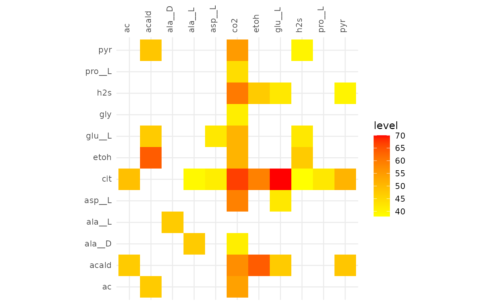
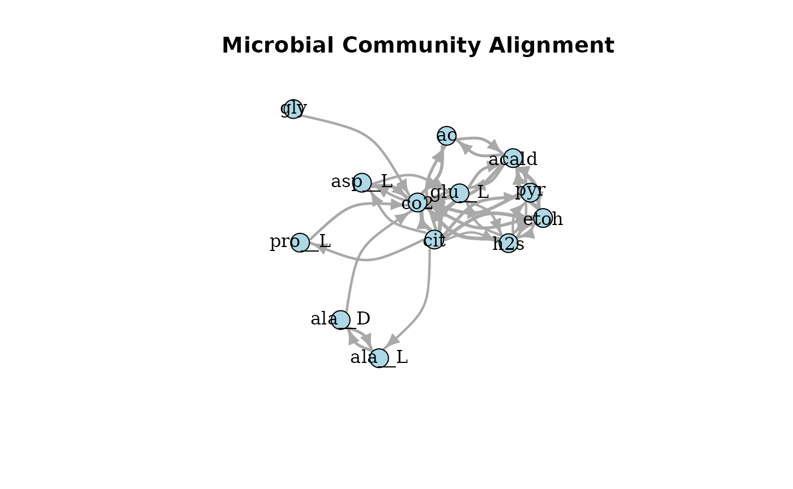

Alignment of Communities on Different Substrates
ex1-substrates.Rmd
library(dplyr)
#>
#> Attaching package: 'dplyr'
#> The following objects are masked from 'package:stats':
#>
#> filter, lag
#> The following objects are masked from 'package:base':
#>
#> intersect, setdiff, setequal, union
library(fsmc)
library(magrittr)
library(purrr)
#>
#> Attaching package: 'purrr'
#> The following object is masked from 'package:magrittr':
#>
#> set_names
library(readr)
library(stringr)
library(tidyr)
#>
#> Attaching package: 'tidyr'
#> The following object is masked from 'package:magrittr':
#>
#> extractAlignment of Communities on Different Substrates
This vignette outlines a full workflow for the fsmc
package. This includes the following steps:
- Community object creation
- Community alignment
- Analysis of the alignment
The data analysed here was generated with misosoup, a
command line tool designed to identify minimum viable communities in
which each member is essential for the community to function. The data
is provided in the fsmc-data repository on GitHub and can
be used to test the package’s functionality.
The data set consists of 386 different microbial communities, including 272 with acetate as the carbon source, 219 with citrate as the carbon source, and 24 with fructose 6-phosphate (f6p) as the carbon source.
sbs_url <- "https://raw.githubusercontent.com/admarhi/fsmc-data/main/misosoup/substrate.csv"
sbs_tb <-
read_csv(sbs_url) %>%
group_by(substrate, focal_strain) %>%
filter(solution <= 5) %>%
ungroup() %>%
nest(.by = c("substrate", "focal_strain", "solution")) %>%
mutate(name = paste(substrate, focal_strain, solution, sep = "_")) %>%
select("name", "data")
#> Rows: 51630 Columns: 6
#> ── Column specification ────────────────────────────────────────────────────────
#> Delimiter: ","
#> chr (4): substrate, focal_strain, species, metabolite
#> dbl (2): solution, flux
#>
#> ℹ Use `spec()` to retrieve the full column specification for this data.
#> ℹ Specify the column types or set `show_col_types = FALSE` to quiet this message.
sbs_list <- set_names(sbs_tb$data, sbs_tb$name)
ac <-
keep(sbs_list, str_starts(names(sbs_list), "ac")) %>%
imap(newMiCo)
cit <-
keep(sbs_list, str_starts(names(sbs_list), "cit")) %>%
imap(newMiCo)
f6p <-
keep(sbs_list, str_starts(names(sbs_list), "f6p")) %>%
imap(newMiCo)
compareAlignments(
ac_alig, cit_alig, f6p_alig,
names = c("Acetate", "Citrate", "Fructose"),
smooth = TRUE
) %>% plotly::ggplotly()
plotAlignmentHeatmap(ac_alig, 0.5)
plotAlignmentHeatmap(cit_alig, 0.5)
plotAlignmentHeatmap(f6p_alig, 0.5)
plotAlignmentHeatmap(ac_alig, 0.8)
plotAlignmentHeatmap(cit_alig, 0.8)
plotAlignmentHeatmap(f6p_alig, 0.8)
plotAlignmentHeatmap(ac_alig, 0.88)
plotAlignmentHeatmap(cit_alig, 0.88)
plotAlignmentHeatmap(f6p_alig, 0.88)
plotAlignmentNetwork(ac_alig, 0.5)
plotAlignmentNetwork(cit_alig, 0.5)
plotAlignmentNetwork(f6p_alig, 0.5)
plotAlignmentNetwork(ac_alig, 0.8)
plotAlignmentNetwork(cit_alig, 0.8)
plotAlignmentNetwork(f6p_alig, 0.8)
plotAlignmentNetwork(ac_alig, 0.95)
plotAlignmentNetwork(cit_alig, 0.95)
plotAlignmentNetwork(f6p_alig, 0.95)